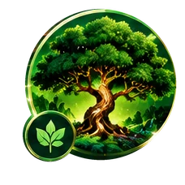
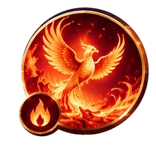
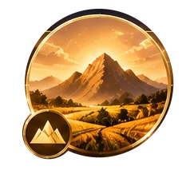
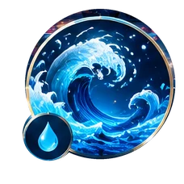
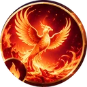
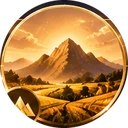

Chinese Zodiac Guide
The Five Elements Explained
Wood, Fire, Earth, Metal, Water
How the five elements shape personality and balance in the Chinese zodiac — and how to find your own.
Most people know their zodiac animal, but far fewer know their element — even though it adds an important second layer to the picture. While the 12 animals repeat every 12 years, the five elements (Wood, Fire, Earth, Metal and Water) repeat on a 10-year cycle. The two cycles only fully line up again every 60 years, so a combination such as “Earth Dragon” comes around just once every six decades.
The Five Elements at a Glance
-

Wood
木 · mù
Growth · Creativity · Flexibility
Wood stands for spring, new beginnings and steady growth. People with strong Wood energy tend to be generous, idealistic and good at working in a team.
Watch out for: taking on too much, or finding it hard to say no.
- ColorGreen
- SeasonSpring
- DirectionEast
- SymbolTree, plant
- Years ending in4 / 5
-

Fire
火 · huǒ
Passion · Energy · Leadership
Fire stands for summer, warmth and passion. Fire people are often natural leaders who act quickly, inspire others and are not afraid to take risks.
Watch out for: burning out relationships or chances by moving too fast.
- ColorRed
- SeasonSummer
- DirectionSouth
- SymbolSun, flame
- Years ending in6 / 7
-

Earth
土 · tǔ
Stability · Patience · Nurturing
Earth stands for balance and nourishment. Earth people are dependable, patient and practical, and good at long-term planning and caring for others.
Watch out for: being too cautious or slow to accept sudden change.
- ColorYellow, brown
- SeasonLate summer
- DirectionCenter
- SymbolMountain, soil
- Years ending in8 / 9
-

Water
水 · shuǐ
Wisdom · Intuition · Adaptability
Water stands for winter, depth and wisdom. Water people are perceptive and diplomatic, calm thinkers who can read a room and adjust easily.
Watch out for: being too passive, or putting off decisions that need to be made.
- ColorBlack, blue
- SeasonWinter
- DirectionNorth
- SymbolRiver, ocean
- Years ending in2 / 3
1. Wood Element: Growth, Vision, and Flexibility
In the Chinese five-element system, Wood (木, mù) represents the force of life pushing upward: seeds sprouting, branches reaching toward sunlight, and ideas developing into something useful. Its traditional associations include spring, the east, the color green, and the capacity to begin again after a difficult season. Wood is not simply a symbol of plants. It describes a pattern of movement—planning, expanding, learning, and building for the future.
Wood is often associated with creativity, generosity, curiosity, cooperation, and a strong sense of direction. A Wood-oriented person may enjoy making plans, helping a group improve, or finding a better way to solve a problem. In work, these qualities can be useful in teaching, design, community projects, entrepreneurship, and roles that require long-term development. In relationships, Wood symbolism emphasizes encouragement and shared growth: supporting another person while still allowing both people room to change.
The same drive to grow can become a challenge when it turns into overcommitment. Someone who identifies with Wood themes may say yes to too many projects, become frustrated when progress is slow, or push a plan forward without checking whether others are ready. A practical way to balance this symbolism is to choose a small number of priorities, set realistic milestones, and treat flexibility as a strength rather than a compromise. A healthy tree bends in strong wind; it does not need to remain rigid to keep growing.
Wood in everyday life: Think of a goal you want to develop over the next few months. Write down the next two manageable steps, ask for feedback from someone you trust, and leave space to adjust your plan. The traditional lesson of Wood is steady growth guided by purpose, not growth at any cost.
2. Fire Element: Passion, Visibility, and Inspiration
Fire (火, huǒ) is linked with warmth, illumination, summer, the south, and the color red. A flame makes things visible and brings people together, so Fire is traditionally connected with enthusiasm, expression, confidence, celebration, and the ability to inspire. In the five-element cycle, Wood feeds Fire: preparation and growth provide the conditions for energy to become action. Fire, in turn, changes what it touches, making it a symbol of transformation as well as excitement.
Fire symbolism is often used to describe people who communicate vividly, act decisively, and enjoy motivating a team. They may be drawn to performing, presenting, leading a project, hosting gatherings, or turning an idea into a visible result. In friendships and family life, Fire can represent warmth and generosity—the willingness to show affection, celebrate another person's success, and bring energy to a shared experience. In professional settings, enthusiasm can help a group move from discussion to action.
Yet a flame needs fuel and boundaries. In traditional interpretations, an excess of Fire can suggest impatience, impulsive choices, dramatic reactions, or taking on so much that energy runs out. Constantly pushing harder is not the same as making meaningful progress. A useful balancing practice is to pause before responding to a tense message, check the likely consequences of a quick decision, and schedule genuine rest after periods of intense effort. Listening carefully can be just as powerful as speaking confidently.
Fire in everyday life: Use enthusiasm to begin something important, then give the project a simple structure: a deadline, a realistic budget, and a short list of next steps. If you are working with other people, invite their views before making a final decision. Fire's traditional lesson is to share warmth and inspiration without burning through your own resources or other people's trust.
3. Earth Element: Stability, Care, and Reliability
Earth (土, tǔ) represents the ground that supports life, the soil that nourishes crops, and the steady center around which activity can be organized. Its traditional associations include the center, yellow and earthy colors, and periods of transition between seasons. Unlike the quick upward movement of Wood or the bright intensity of Fire, Earth is linked with steadiness, practical care, nourishment, and the work required to make a plan sustainable.
Earth symbolism is often associated with reliability, patience, thoughtfulness, and a preference for results that last. Someone who relates to Earth themes may be the person who remembers the details, keeps promises, prepares for practical needs, or helps a family or team stay connected. These qualities are valuable in caregiving, operations, administration, budgeting, hospitality, and any situation where consistent follow-through matters. Earth also reminds us that support is not always dramatic; sometimes it means showing up repeatedly and doing the necessary work.
Stability can become a limitation when it changes into resistance to every new idea. An Earth-oriented person may worry about uncertainty, delay a decision while seeking perfect security, or care for everyone else while neglecting personal needs. Balance does not mean abandoning caution. It means distinguishing a genuine risk from a manageable change and recognizing that a stable foundation can support experimentation. Asking what evidence would make a new option worth trying can turn hesitation into a thoughtful decision.
Earth in everyday life: Choose one routine that would make life more dependable—such as planning meals, reviewing a weekly budget, keeping a shared calendar, or setting aside time to check in with family. Keep the routine realistic, and remember to include your own rest and needs. The traditional lesson of Earth is to create security that nourishes people rather than rules that leave no room to breathe.
4. Metal Element: Discernment, Principles, and Focus
Metal (金, jīn) is traditionally associated with autumn, the west, white and metallic colors, and the process of refining what is useful. Metal can be shaped, polished, and sharpened; these images connect it with standards, clarity, discipline, boundaries, and the ability to separate essentials from distractions. In the five-element cycle, Earth produces Metal, an image that suggests valuable material emerging from the ground after time and effort.
Metal symbolism is often linked with people who value honesty, precision, responsibility, and clear expectations. They may enjoy organizing information, improving quality, setting fair rules, or completing a task to a high standard. In work, these themes can support editing, engineering, accounting, planning, quality assurance, and roles where careful judgment is important. In personal relationships, Metal can represent loyalty and integrity: keeping one's word and being clear about what is acceptable.
Standards are helpful, but they can become harsh when perfection matters more than people. An overly rigid Metal interpretation may appear as criticism, difficulty accepting a different method, or reluctance to change a rule even when circumstances have changed. Strong boundaries do not require coldness, and high standards do not require perfection. Balance can come from asking whether a rule still serves its purpose, distinguishing a serious mistake from a small imperfection, and giving feedback that explains how to improve rather than simply pointing out what is wrong.
Metal in everyday life: Pick one area that feels cluttered—your schedule, workspace, spending, or commitments—and decide what deserves to stay. Set one clear boundary and communicate it respectfully. Then make room for an exception when compassion or new information genuinely calls for one. The traditional lesson of Metal is to use clarity and discipline to protect what matters, not to make life unnecessarily inflexible.
5. Water Element: Wisdom, Adaptability, and Reflection
Water (水, shuǐ) is linked with winter, the north, dark blue or black, and the quiet power of rivers, rain, and deep oceans. Water can move around an obstacle, collect in a reservoir, or gradually shape stone. These images make it a symbol of adaptability, reflection, observation, communication, and resources that are not always visible on the surface. In the generating cycle, Water nourishes Wood, showing how reflection and information can support future growth.
Water symbolism is often associated with curiosity, sensitivity, diplomacy, strategic thinking, and the ability to adjust when circumstances change. A person who relates to Water themes may listen closely, notice details others overlook, or prefer to understand a situation before acting. These qualities can be useful in research, negotiation, counseling, writing, planning, and roles that require patience. Water also represents the value of recovery: quiet time can help people process experience and return with a clearer perspective.
Adaptability has a difficult side when it becomes avoidance. Someone may keep every option open, delay a necessary conversation, or change direction so often that important goals never receive sustained attention. Reflection is most useful when it eventually leads to a choice. A balancing practice is to set a decision deadline, write down the information that truly matters, and choose the next reversible step instead of waiting for complete certainty. Flexibility should help you move forward, not keep you permanently undecided.
Water in everyday life: Make time to listen, learn, and think before a major decision. Then summarize what you learned and choose one action to take. If emotions are strong, a pause can be useful, but agree with yourself on when you will return to the issue. The traditional lesson of Water is to remain receptive and resilient while still giving your energy a direction.
How to Use the Five Elements as a Reflection Tool
The five elements are part of a traditional Chinese framework for describing change and relationships. They are not scientifically validated personality tests, and a birth-year element cannot determine a person's character, future, health, or success. People are shaped by many influences, including family, culture, experiences, choices, and circumstances. The elements are most useful when approached as a cultural lens or a set of prompts for self-reflection rather than fixed labels.
You can use the five symbols to ask balanced questions. Wood invites you to consider where you want to grow. Fire asks how you express enthusiasm and share energy. Earth encourages you to build reliable foundations and care for yourself as well as others. Metal asks which principles and boundaries matter most. Water invites you to listen, learn, and adapt without losing direction. You do not need to identify with only one element; different situations may call for different qualities.
For example, a person starting a small business might use Wood to create a long-term vision, Fire to communicate the idea, Earth to prepare a realistic budget, Metal to define quality standards, and Water to learn from customers and adapt. This is a practical illustration of the framework, not a promise of business success. The value lies in considering several perspectives rather than relying on one strength alone.
When reading zodiac compatibility, remember that the generating and controlling cycles describe symbolic relationships between elements—not guaranteed outcomes for couples, relatives, or business partners. Communication, respect, shared goals, and practical circumstances matter much more than an element pairing. If you enjoy traditional symbolism, let it open a thoughtful conversation instead of deciding who someone is before you know them.
Frequently Asked Questions About the Five Elements
What are the five elements in Chinese philosophy?
The five elements, also called the Five Phases or Wu Xing, are Wood, Fire, Earth, Metal, and Water. They describe patterns of change and interaction in traditional Chinese thought rather than five physical substances in the modern scientific sense.
How do I find my Chinese zodiac element?
A quick guide uses the last digit of the zodiac year: 4 or 5 for Wood, 6 or 7 for Fire, 8 or 9 for Earth, 0 or 1 for Metal, and 2 or 3 for Water. Because the Chinese zodiac year begins at Chinese New Year rather than January 1, people born in January or early February should check the exact year boundary with a reliable zodiac calculator.
Do the five elements affect personality?
Traditional interpretations associate each element with certain qualities, but these are cultural beliefs, not scientific measures of personality. Your element cannot reliably predict how you will behave or what will happen in your life.
What is the difference between the generating and controlling cycles?
The generating cycle describes how the elements symbolically support one another: Wood feeds Fire, Fire creates Earth, Earth produces Metal, Metal collects Water, and Water nourishes Wood. The controlling cycle describes balance: Wood controls Earth, Earth controls Water, Water controls Fire, Fire controls Metal, and Metal controls Wood.
Can I have more than one element in a Chinese astrology chart?
Yes. A full traditional Four Pillars or BaZi chart considers the year, month, day, and hour of birth, and it may include multiple elements. The quick birth-year method on this page is a simple introduction, not a complete chart reading.
How the Elements Work Together
The elements are not separate boxes. In traditional Chinese thought they move in two cycles: one where each element helps the next, and one where each element keeps another in check. Together they describe balance.
Generating Cycle (creates)
- Woodfeeds Fire

Firecreates Earth
Earthproduces Metal- Waternourishes Wood
Wood feeds the fire; fire leaves ash that becomes earth; earth holds metal ores; metal gathers water as dew; and water helps trees grow. In the zodiac, people whose elements follow each other in this cycle are often said to support each other.
Controlling Cycle (balances)
- Woodcontrols Earth
- Earthcontrols Water
- Watercontrols Fire
- Firecontrols Metal
Tree roots break up the earth; earth dams water; water puts out fire; fire melts metal; and a metal axe cuts wood. This cycle is not “bad” — it keeps any one element from growing too strong.
How to Find Your Element
Your element comes from the last digit of your birth year. Each element covers two years in a row: the even year is the Yang (active) side and the odd year is the Yin (quiet) side.
Example: 1989 ends in 9, so it is an Earth year — and 1989 is the Year of the Snake, which makes an Earth Snake. 2026 ends in 6: a Fire Horse year.
Born in January or early February? The zodiac year starts at Chinese New Year, not on 1 January, so you may belong to the previous year’s element and animal.
| Last digit of birth year | Element |
|---|---|
| 0, 1 | Metal |
| 2, 3 | Water |
| 4, 5 | Wood |
| 6, 7 | Fire |
| 8, 9 | Earth |
The Checker works this out for you, including the Chinese New Year date.
Read next: how your Chinese zodiac sign is calculated and the 12 zodiac animals.
For entertainment and cultural interest only. Element meanings come from traditional Chinese thought and are not scientific predictions.